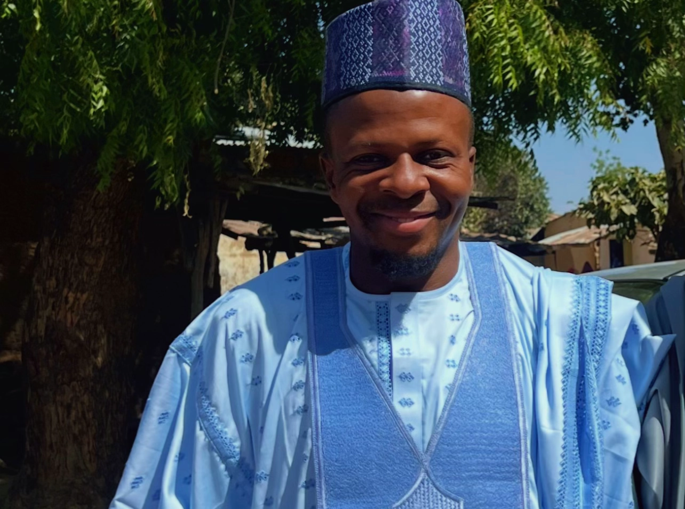
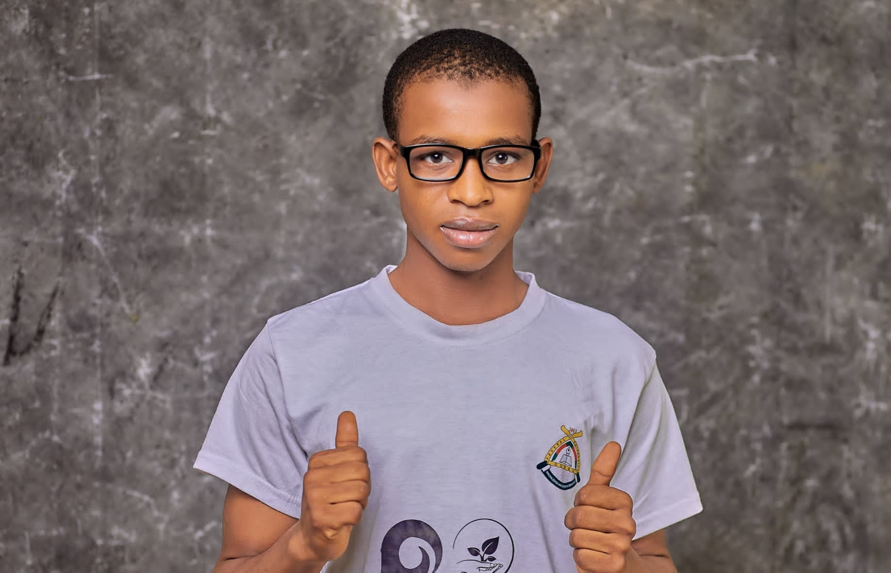
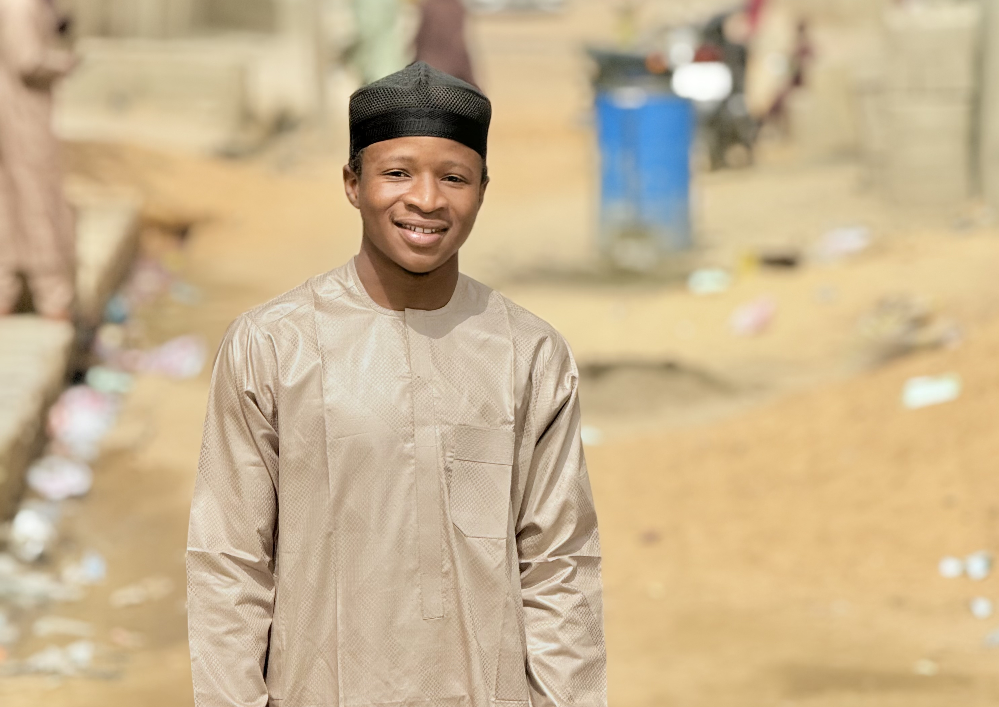

About AMA & CO TEXTILE LTD
For over a decade, AMA & CO TEXTILE LTD has been a trusted name in the textile industry across Nigeria and beyond. We specialize in premium fabrics for every occasion, delivering worldwide with speed and care. Our commitment to quality, integrity, and customer satisfaction has made us a household name from Kano to Kaduna, and from Lagos to London. Shop your style with us – we bring the world of textiles to your doorstep.
Meet Our Team


